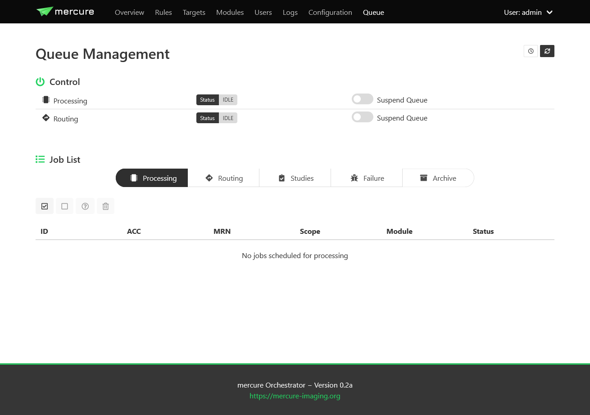
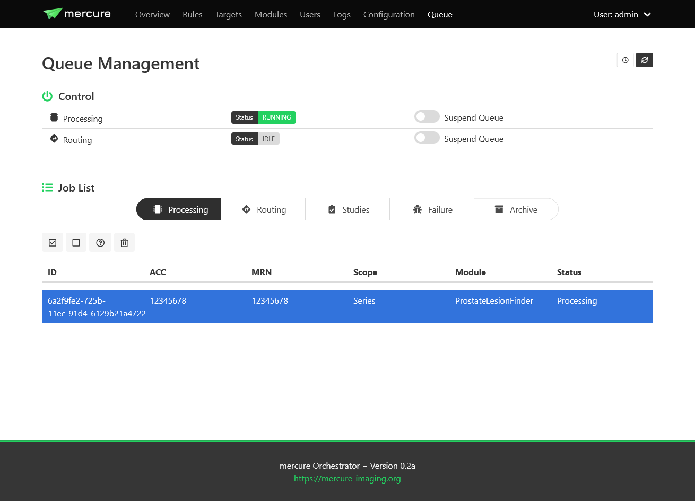

Queue Management
The “Queue” page allows monitoring the status of mercure’s processing and routing queues, and it provides basic functions for modifying jobs in the processing queue. It also allows reviewing jobs that have been previously processed or routed, or that have failed.
{kind=link}
Note
By default, the views do not update automatically when the page is open, as this could have negative impact on the server load. Press the Refresh button in the top-right corner to update the queue lists. When pressing the Auto Update button, the view will be updated every 10 sec.
Queue Status
The upper part of the page indicates if mercure is currently processing or routing images. Using the switches “Suspend Queue”, you can halt the processing or routing queue. In this case, mercure will finish the active job but will not start another job until the queue has been started again. This can be helpful if it is necessary to patch job parameters, or if module settings need to be changed before additional series can be processed.
Job Status
The lower part of the page shows the status of individual jobs in mercure’s different queues.
Note
If you send a DICOM series to mercure, it takes a short time before the series becomes visible on the Queue page (i.e. on the Processing, Routing, or Studies tab) because mercure first waits for expiration of the series completion timeout (60 sec by default, changable in the configuration).
The “Processing” tab shows the jobs currently placed in the processing queue, i.e. jobs (series or studies) for which processing modules are executed. You can mark jobs by clicking on the corresponding row. This will activate the toolbar above the table, which allows, e.g., displaying additional job information or deleting jobs. Similarly, the “Routing” tab shows the outgoing jobs currently placed in the routing queue.
{kind=link}
The “Studies” tab show the list of studies currently waiting for complete image arrival, i.e. studies for which a study-level rule has triggered and for which DICOM series are still being collected. It allows enforcing the completion of the series collection by clicking the button “Force study completion”.
The “Failure” tab shows a list of all jobs for which processing errors have occurred, including errors during preparation, processing, and routing. Failed jobs can be restarted.
Job Archive
The “Archive” tab allows reviewing the status of the last series/studies that have completed processing/routing or that have been discarded because no rule had triggered. Using the search box shown above the table, it is furthermore possible to search for specific cases by patient name, medical record number (MRN), or accession number (ACC). By clicking the filter button (top left above the table), it is possible to restrict the search to only study-level jobs.
Note
For study-level jobs, there will be a separate job with scope “SERIES” for each individual series as well as one joint job with scope “STUDY”. This is because the indiviudal series initially get collected and then assigned to the STUDY job.
Additional information about the jobs can be displayed by selecting one job in the table and clicking on the buttons above the table.
Button |
Function |
|---|---|
Job information |
Shows details on the received study (e.g., patient, modality, and protocol data) and the assigned processing task |
Audit trail |
Shows a journal of all processing events related to the case |
Processing log |
Shows the captured output from all processing modules that have been executed for the job. If there are multiple jobs, the logs are concatenated |
Processing results |
Shows the results returned by the processing modules (if any) |